Primeira audição
first-listen
bronzeSímbolo SVGColecionador
collector
bronzeSímbolo SVGCriador de playlists
playlist-maker
bronzeSímbolo SVGEm sequência
streak
silverSímbolo SVGMil minutos
thousand-minutes
goldSímbolo SVGExplorador musical
discoverer
silverSímbolo SVGPequena coleção
library-25
bronzeSímbolo SVGAcervo centenário
library-100
silverSímbolo SVGArquivo musical
library-500
platinumSímbolo SVGBiblioteca lendária
library-1000
topazSímbolo SVGAcervo infinito
library-5000
emeraldSímbolo SVGGrande arquivo
library-10000
rubySímbolo SVG
Biblioteca monumental
library-25000
diamondSímbolo SVGDez minutos de som
listening-minutes-10
bronzeSímbolo SVGUma hora de música
listening-minutes-60
silverSímbolo SVGDuas horas de trilha
listening-minutes-120
silverSímbolo SVGOuvinte constante
listening-minutes-250
goldSímbolo SVGLonga jornada
listening-minutes-500
platinumSímbolo SVGMil minutos
listening-minutes-1000
topazSímbolo SVGLenda sonora
listening-minutes-10000
topazSímbolo SVGUniverso de som
listening-minutes-50000
emeraldSímbolo SVGCem mil minutos
listening-minutes-100000
sapphireSímbolo SVGMar de música
listening-minutes-250000
rubySímbolo SVGConstelação sonora
listening-minutes-500000
rubySímbolo SVG
Eternidade musical
listening-minutes-1000000
diamondSímbolo SVGNovas vozes
artists-10
bronzeSímbolo SVGExplorador de cenas
artists-50
goldSímbolo SVGUniverso musical
artists-250
platinumSímbolo SVGMapa musical completo
artists-1000
emeraldSímbolo SVGCartógrafo de artistas
artists-2500
sapphireSímbolo SVGArquivo de vozes
artists-5000
diamondSímbolo SVGDez encontros
listens-10
bronzeSímbolo SVGPresença constante
listens-50
silverSímbolo SVGTrilha sonora pessoal
listens-250
platinumSímbolo SVGMil momentos
listens-1000
topazSímbolo SVGDez mil lembranças
listens-10000
emeraldSímbolo SVGMemórias sem fim
listens-50000
rubySímbolo SVGCem mil encontros
listens-100000
diamondSímbolo SVGTrio de playlists
playlists-3
bronzeSímbolo SVGCurador musical
playlists-10
goldSímbolo SVGArquiteto de playlists
playlists-50
platinumSímbolo SVGCurador lendário
playlists-250
emeraldSímbolo SVGMestre das coleções
playlists-500
sapphireSímbolo SVGBibliotecário supremo
playlists-1000
diamondSímbolo SVGPrimeiro favorito
favorites-1
bronzeSímbolo SVGDez favoritas
favorites-10
goldSímbolo SVGFavoritos de sobra
favorites-50
platinumSímbolo SVGCem favoritas
favorites-100
emeraldSímbolo SVGColeção de favoritos
favorites-250
sapphireSímbolo SVGMil canções queridas
favorites-1000
diamondSímbolo SVGTrês estilos
genres-3
bronzeSímbolo SVGDez gêneros
genres-10
platinumSímbolo SVGTodos os ritmos
genres-30
emeraldSímbolo SVGAtlas dos gêneros
genres-100
diamondSímbolo SVGColeção de álbuns
albums-5
bronzeSímbolo SVGArquivo de álbuns
albums-50
platinumSímbolo SVGDiscoteca centenária
albums-100
emeraldSímbolo SVGAcervo de álbuns
albums-500
diamondSímbolo SVGUma semana no ritmo
streak-7
bronzeSímbolo SVGMês musical
streak-30
silverSímbolo SVGRitmo persistente
streak-60
goldSímbolo SVGSequência extraordinária
streak-100
platinumSímbolo SVGUm ano de música
streak-365
topazSímbolo SVGRitmo lendário
streak-500
emeraldSímbolo SVGDois anos no compasso
streak-730
sapphireSímbolo SVGMil dias de música
streak-1000
rubySímbolo SVGCinco anos em sequência
streak-1825
diamondSímbolo SVGAURA Chama I desbloqueada
aura-streak-1
bronzeSímbolo SVGAURA Chama II desbloqueada
aura-streak-25
goldSímbolo SVGAURA Chama III desbloqueada
aura-streak-50
topazSímbolo SVGAURA Chama IV desbloqueada
aura-streak-100
sapphireSímbolo SVGAURA Chama V desbloqueada
aura-streak-150
diamondSímbolo SVGPrimeiro movimento
fitness-primeiro-movimento
bronzeSímbolo SVGTrês atividades
fitness-tres-atividades
silverSímbolo SVGRitmo constante
fitness-ritmo-constante
goldSímbolo SVGDez atividades
fitness-dez-atividades
platinumSímbolo SVGMovimento frequente
fitness-movimento-frequente
topazSímbolo SVGUm mês em movimento
fitness-um-mes-em-movimento
emeraldSímbolo SVGCinquenta jornadas
fitness-cinquenta-jornadas
sapphireSímbolo SVGPasso de explorador
fitness-passo-de-explorador
rubySímbolo SVGCentena ativa
fitness-centena-ativa
diamondSímbolo SVGLenda do movimento
fitness-lenda-do-movimento
diamondSímbolo SVGQuinhentas jornadas
fitness-quinhentas-jornadas
diamondSímbolo SVGMil vezes em movimento
fitness-mil-vezes-em-movimento
diamondSímbolo SVGMovimento extraordinário
fitness-movimento-extraordinario
diamondSímbolo SVGPrimeiro quilômetro
fitness-primeiro-quilometro
diamondSímbolo SVG3 km de percurso
fitness-3-km-de-percurso
diamondSímbolo SVG5 km acumulados
fitness-5-km-acumulados
diamondSímbolo SVG10 km explorados
fitness-10-km-explorados
diamondSímbolo SVGTrilha de 15 km
fitness-trilha-de-15-km
diamondSímbolo SVG25 km de jornada
fitness-25-km-de-jornada
diamondSímbolo SVG50 km conquistados
fitness-50-km-conquistados
diamondSímbolo SVGHorizonte de 100 km
fitness-horizonte-de-100-km
diamondSímbolo SVGGrande travessia
fitness-grande-travessia
diamondSímbolo SVGMeio milhão de metros
fitness-meio-milhao-de-metros
diamondSímbolo SVGRota de 750 km
fitness-rota-de-750-km
diamondSímbolo SVGMil quilômetros
fitness-mil-quilometros
diamondSímbolo SVGCaminhos sem fim
fitness-caminhos-sem-fim
diamondSímbolo SVGDez minutos ativo
fitness-dez-minutos-ativo
diamondSímbolo SVGMeia hora ativa
fitness-meia-hora-ativa
diamondSímbolo SVGUma hora em movimento
fitness-uma-hora-em-movimento
diamondSímbolo SVGDuas horas ativas
fitness-duas-horas-ativas
diamondSímbolo SVGCinco horas ativo
fitness-cinco-horas-ativo
diamondSímbolo SVGDez horas em movimento
fitness-dez-horas-em-movimento
diamondSímbolo SVG25 horas ativo
fitness-25-horas-ativo
diamondSímbolo SVG50 horas em movimento
fitness-50-horas-em-movimento
diamondSímbolo SVG100 horas ativo
fitness-100-horas-ativo
diamondSímbolo SVGLenda incansável
fitness-lenda-incansavel
diamondSímbolo SVGQuinhentas horas
fitness-quinhentas-horas
diamondSímbolo SVGMil horas em movimento
fitness-mil-horas-em-movimento
diamondSímbolo SVGPrimeiro percurso longo
fitness-primeiro-percurso-longo
diamondSímbolo SVGTrês quilômetros de uma vez
fitness-tres-quilometros-de-uma-vez
diamondSímbolo SVGDesafio dos cinco
fitness-desafio-dos-cinco
diamondSímbolo SVGDez quilômetros em um treino
fitness-dez-quilometros-em-um-treino
diamondSímbolo SVGMeia maratona
fitness-meia-maratona
diamondSímbolo SVGMaratona pessoal
fitness-maratona-pessoal
diamondSímbolo SVGDez mil passos estimados
fitness-dez-mil-passos-estimados
diamondSímbolo SVGCem mil passos
fitness-cem-mil-passos
diamondSímbolo SVGMeio milhão de passos
fitness-meio-milhao-de-passos
diamondSímbolo SVGUm milhão de passos
fitness-um-milhao-de-passos
diamondSímbolo SVGPassos de uma vida
fitness-passos-de-uma-vida
diamondSímbolo SVGCaminhante dedicado
fitness-caminhante-dedicado
diamondSímbolo SVGExplorador a pé
fitness-explorador-a-pe
diamondSímbolo SVGCem caminhadas
fitness-cem-caminhadas
diamondSímbolo SVGPrimeira corrida
fitness-primeira-corrida
diamondSímbolo SVGCorredor constante
fitness-corredor-constante
diamondSímbolo SVGCinquenta corridas
fitness-cinquenta-corridas
diamondSímbolo SVGCentena de corridas
fitness-centena-de-corridas
diamondSímbolo SVGPrimeiro laço
friends-1
bronzeSímbolo SVGPequeno círculo
friends-3
bronzeSímbolo SVGRoda de amizade
friends-5
silverSímbolo SVGRede de confiança
friends-10
silverSímbolo SVGGrande comunidade
friends-25
goldSímbolo SVGPrimeira playlist a dois
shared-playlists-1
goldSímbolo SVGTroca de descobertas
shared-playlists-3
platinumSímbolo SVGCurador compartilhado
shared-playlists-10
platinumSímbolo SVGBiblioteca coletiva
shared-playlists-25
topazSímbolo SVGPrimeiro desafio
challenges-created-1
topazSímbolo SVGDesafiante
challenges-created-3
emeraldSímbolo SVGMestre dos desafios
challenges-created-10
emeraldSímbolo SVGMeta alcançada em equipe
challenges-completed-1
sapphireSímbolo SVGTrinca de vitórias
challenges-completed-3
sapphireSímbolo SVGLenda dos desafios
challenges-completed-10
rubySímbolo SVGEntrou na roda
challenges-joined-1
rubySímbolo SVGParceiro de escuta
challenges-joined-3
diamondSímbolo SVGCompanheiro de jornada
challenges-joined-10
diamondSímbolo SVG
Cristal da Sintonia
aura-crystal-bonds
crystalSímbolo SVGCristal de Aura
aura-crystal-curator
crystalSímbolo SVGConexão lendária
aura-crystal-harmony
crystalSímbolo SVG